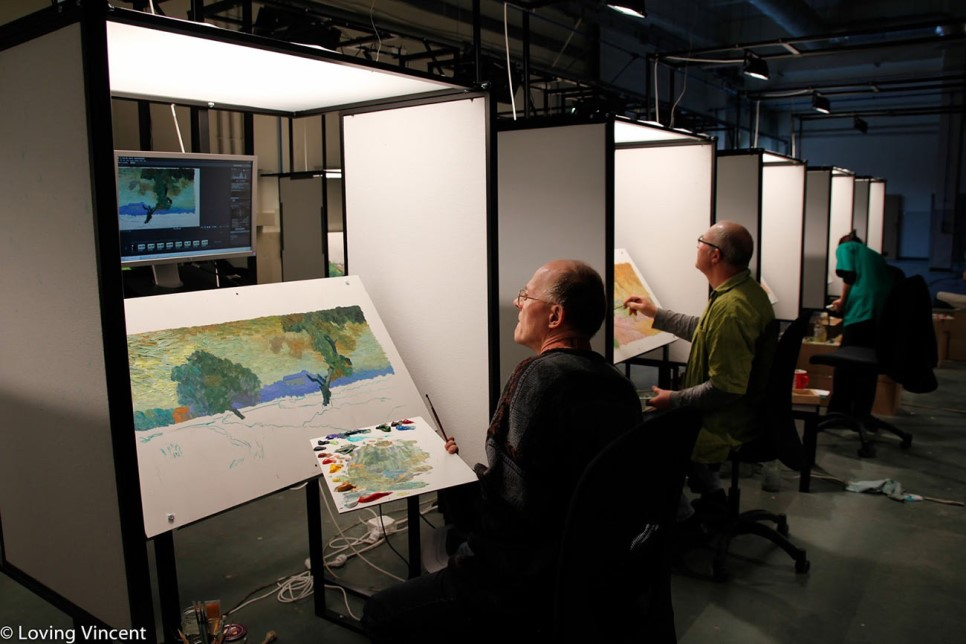
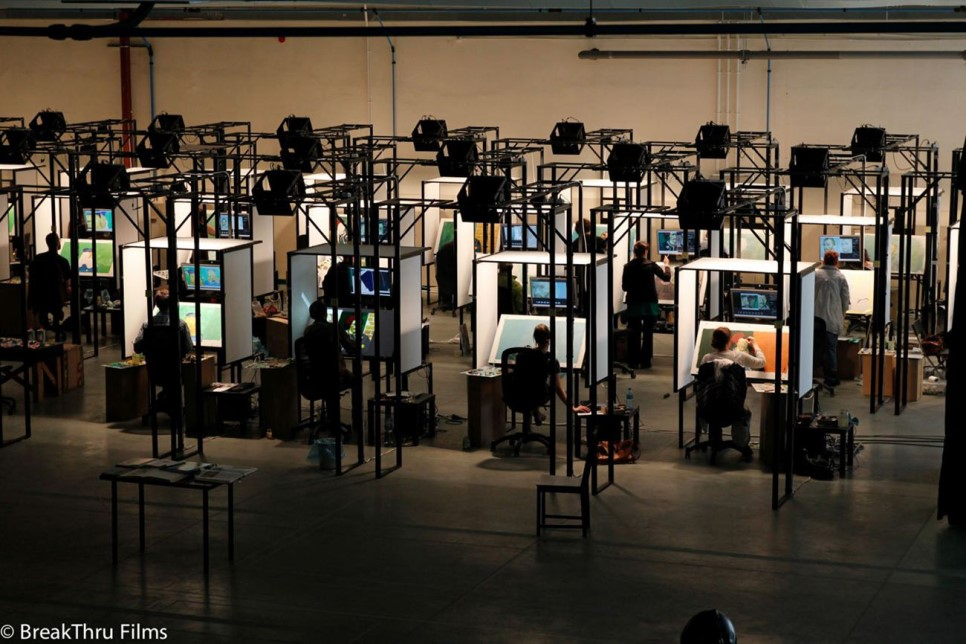

살아생전 단 한 점의 그림만을 팔았던 화가 ‘빈센트’의 죽음 후 1년.
아버지의 부탁을 받고 ‘빈센트’의 소식을 전하기 위해 떠난 ‘아르망’은
‘빈센트’가 마지막 머물렀던 마을에서 놀라운 사실들을 알게 되는데…


제작과정
러빙빈센트의 제작에는 125명의 애니메이터가 참여했다.
러빙빈센트의 제작에 참여할 애니메이터를 공개채용하는 동영상이 엄청난 화제를 불러일으키면서 전세계에서 5천명이 넘는 지원자들이 몰렸다고 한다. 하지만 애니메이터들 중에서 유화를 전공한 사람들이 많지 않았기 때문에 유화전공 애니메이터들과 순수미술가들이 함께 팀을 이루었다고 한다.
총 65,000 프레임들중 1,000 프레임만이 남았고 800 작품은 판매중이다.
촬영을 하면서 계속해서 지우고 그리고를 반복하다보니 많은 프레임들이 남아있지않다. 그 중에서 200작품은 러빙빈센트의 개봉과 함께 전시회가 열렸고 나머지 800 작품들은 온라인에서 판매중이다.